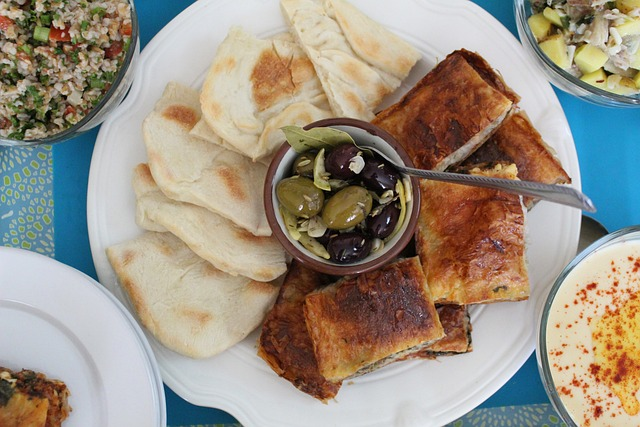

Istanbul, la Ville aux Milles Visages!
Histoire
Il était une fois, dans les méandres du temps, une ville unique où les histoires de l'Orient et de l'Occident se mêlaient dans un kaléidoscope fascinant. Istanbul, autrefois Byzance et Constantinople, était bien plus qu'une simple ville. C'était un carrefour de cultures, de religions et de civilisations, un lieu où l'histoire elle-même semblait s'entrelacer avec le présent.
Au fil des siècles, Istanbul a été le témoin de nombreuses époques et de nombreux peuples. Fondée par les Grecs il y a des millénaires, elle est devenue la capitale de l'Empire romain d'Orient, puis de l'Empire byzantin, avant d'être conquise par les Ottomans au 15ème siècle et de devenir la capitale de leur vaste empire.
Chaque coin de rue, chaque palais, chaque mosquée semblait raconter une histoire différente, un récit de gloire et de décadence, de conquête et de résilience. Les remparts de la ville, témoins des batailles qui ont façonné son destin, se dressaient fièrement le long du détroit du Bosphore, séparant l'Europe de l'Asie.
Aujourd'hui encore, Istanbul continue d'enchanter et d'émerveiller ceux qui la visitent. Ses minarets élancés et ses dômes dorés se dressent toujours fièrement contre le ciel, rappelant à tous ceux qui la contemplent son passé glorieux et son avenir prometteur. Car Istambul n'est pas seulement une ville du passé, c'est aussi une ville du présent et du futur, où les histoires continuent de s'écrire et de se dérouler, jour après jour, siècle après siècle.

Mezzé
Les mezzés sont une variété de petits plats d'entrée servis traditionnellement avec de l'alcool, comme le rakı. Ils peuvent inclure des olives, des fromages, des légumes marinés, des fruits de mer, des salades et bien plus encore, offrant une explosion de saveurs et de textures à partager entre amis.